Rastreio
de pedido
Encontrar todos os pedidos só com o CPF e saber, em uma frase, onde cada um está e quando chega.
“Cadê o meu pedido?”
É a pergunta mais repetida no atendimento de qualquer e-commerce. Na loja nova da New Hair não existia um lugar para a cliente acompanhar a entrega sem login.
O objetivo era achar todos os pedidos só com o CPF, em segundos, e entender em uma frase onde cada um está e quando chega.
Antes de desenhar, conferi o que a plataforma entrega de verdade. Três descobertas mudaram a tela.
O pedido traz o código copia e cola. A tela de rastreio virou também um lugar para concluir o pagamento.
Com protótipo em código e dados reais, cada rodada de feedback virou uma versão nova no ar.
O case completo
Toque numa imagem para ampliar.
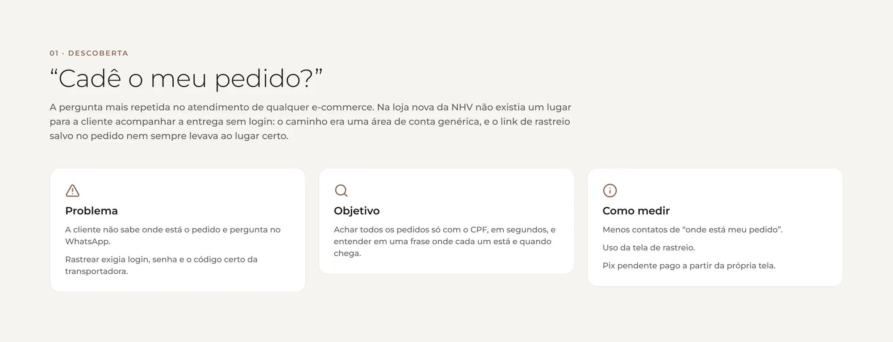
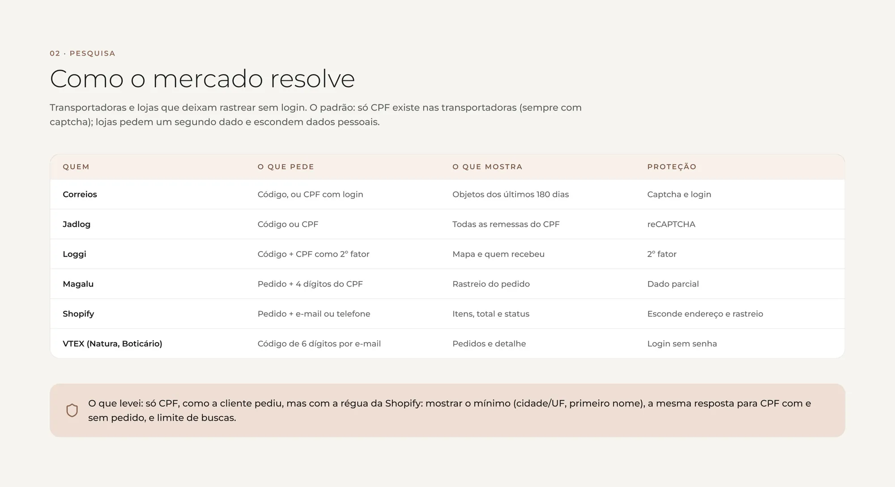
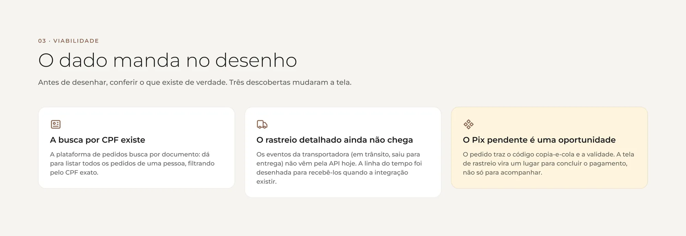
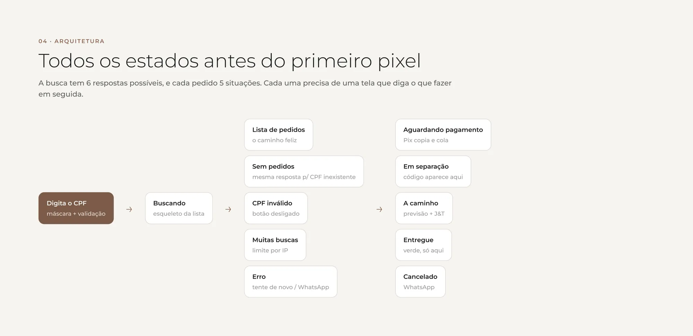
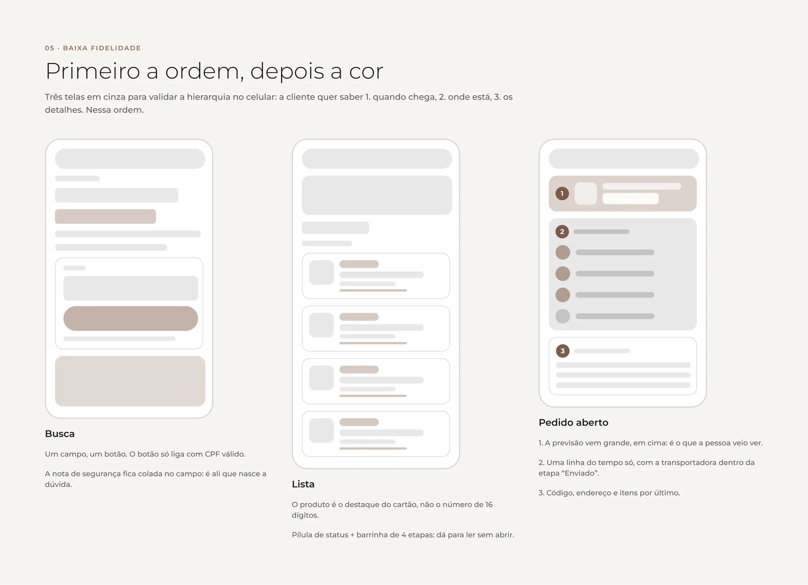
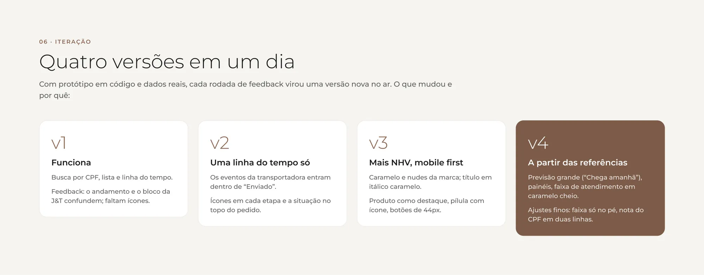
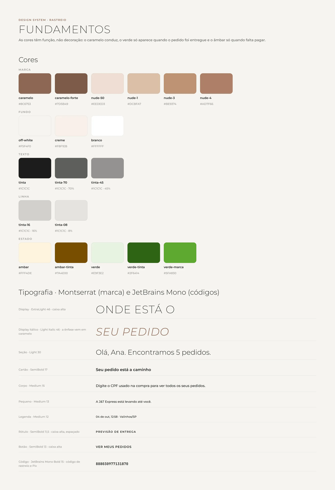
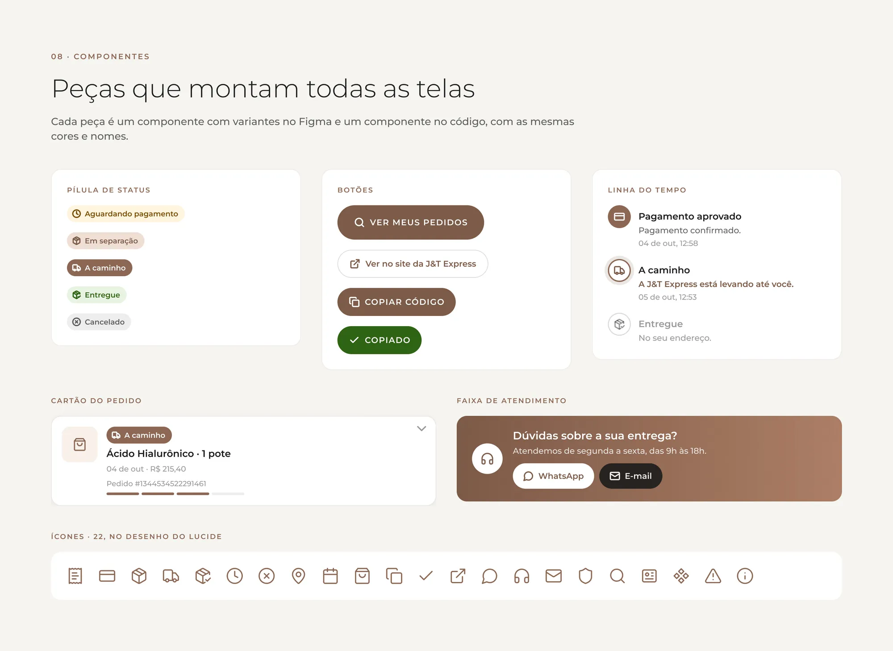
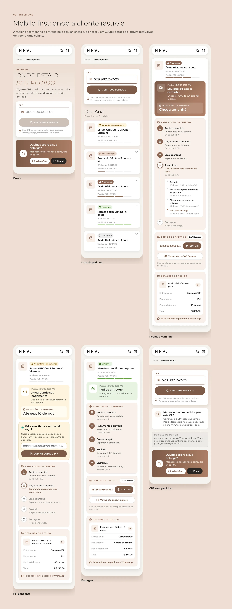
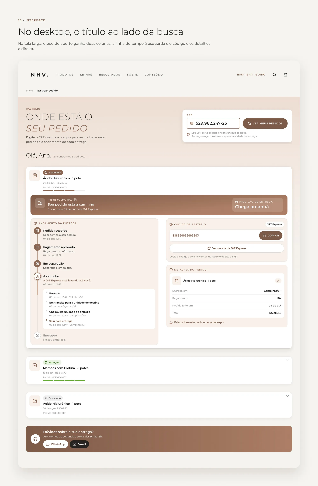
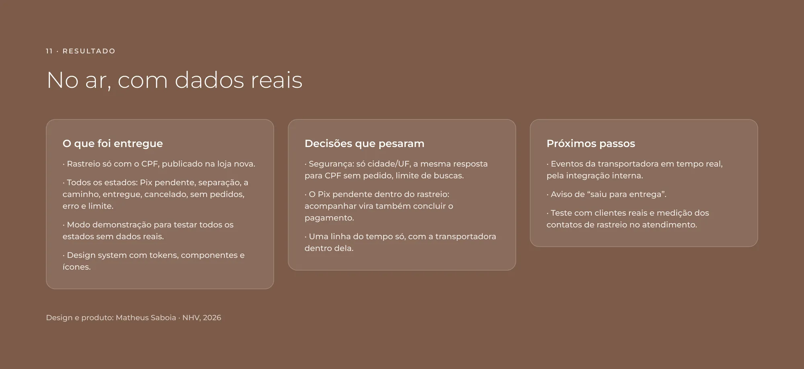